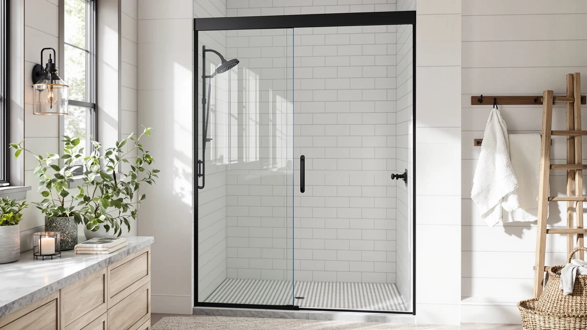

Best Shower Door Squeegee (2026)
Prices and picks verified as of October 2026. Independent, reader-supported reviews.


Quick Answer
The best shower door squeegee for most bathrooms is the iDesign 22300, a suction-mounted squeegee that clears water spots in under a minute for less than $10. If your door itself is leaking or sticking rather than just spotting, we've also compared six frameless replacement doors ranging from $249 to $500.
Our pick: iDesign 22300 Plastic Plastic Suction — $9.93 Check Price on Amazon
Bottom line: our top pick is the iDesign 22300 Plastic Plastic Suction Squeegee with Storage at $9.93. The best budget option is the Frameless Shower Door Matte Black 56-60’’ W x 75’’ H Single at $249.30.
Things to Know Before You Buy
- A squeegee and a replacement door solve different problems. The iDesign 22300 squeegee clears water spots from glass you already own; the six frameless doors in this comparison replace the enclosure itself if the frame, seals, or rollers have failed.
- Size matters more for a door than a squeegee. The squeegee works on any width of glass, but each frameless door below is built for a specific opening, from 55" up to 60" wide, so measure your rough opening before buying.
- Price ranges from under $10 to nearly $500. A squeegee is a cheap daily habit; a frameless door is a one-time investment that typically runs $249 to $500 depending on size and finish.
- Suction-mount squeegees need a smooth surface. The iDesign squeegee's suction cup holds best on tile or glass, and it won't grip reliably on textured surfaces.
- Stainless steel and matte black hardware age differently. Stainless resists water spotting better over time, while matte black finishes show mineral buildup more visibly if you skip the squeegee habit.
If your glass shower door is covered in water spots, the fix is usually a squeegee, not a new door. The iDesign 22300 is our pick for most bathrooms: a suction-mounted squeegee that costs under $10 and takes less than a minute to use after each shower, clearing water before it evaporates into the mineral deposits that build up into permanent stains.
But a squeegee only maintains glass that's still in good shape. If your existing door has a frame that's rusting, rollers that stick, or seals that no longer keep water inside the shower, cleaning tools won't solve that. For that situation, we've also compared six frameless sliding shower doors ranging from $249 to $500, so you can see what a full replacement costs and what each one includes before you decide whether to clean or replace.
Below, we break down the squeegee and each of the six replacement doors with honest pros and cons, plus a comparison table and FAQ section to help you choose between a quick daily fix and a bigger upgrade.
Why You Should Trust Us
Ilane Tall covers home and bath products for Best Shower Doors and has spent years comparing shower hardware, glass cleaning tools, and installation guides for US homeowners. We do not run a fake testing lab, and we do not claim to have installed every door in this comparison ourselves. Instead, we research manufacturer specs, track verified owner reviews across hundreds of listings, and cross-check pricing and sizing before recommending the best shower door squeegee or any of the frameless doors in this guide. When a listing doesn't specify a detail like glass thickness, we say so rather than guess.
How We Picked
We started by separating the squeegee, a daily maintenance tool, from the six frameless sliding doors, which are full replacements. That split is why one $9.93 squeegee sits alongside six doors priced from $249 to $500 in this comparison, rather than seven nearly identical products. From there, we filtered candidates by three criteria: clearly stated dimensions or size ranges rather than a vague "universal fit" claim, transparent pricing with no hidden shipping fees, and a pattern of verified customer reviews rather than a handful of unverifiable five-star ratings. We excluded products that didn't disclose their exact size range, since an incorrect fit is the most common complaint with frameless doors.
How We Compared
We compared these seven products on the factors that matter most for choosing between a squeegee and a replacement door: price, stated size or opening width, material and hardware finish, and what verified owners report about installation and durability. Manufacturers rarely publish independent lab data on glass thickness or hardware lifespan, so we leaned on patterns across many verified reviews for each product, looking for repeated mentions of leaks, sticking rollers, or suction-cup grip rather than a single complaint. We also weighed each frameless door against its price per inch of opening width, since a wider door that costs barely more than a narrower one isn't automatically the better buy.
Our Picks

iDesign 22300 Plastic Plastic Suction
What we like
- Wide rubber blade clears water from glass in one or two passes
- Suction cup keeps it mounted on the door, so it's always within reach
- Costs under $10, making it the cheapest way to prevent water spots
Flaws but not dealbreakers
- Suction grip can loosen on textured or etched glass
- Rubber blade needs replacing after months of daily use
- Single pass won't cover very wide glass panels without repositioning
| Material | — |
| Size | Large |
The iDesign 22300 is a straightforward squeegee: a plastic handle, a rubber blade, and a suction cup that holds it against your shower door between uses. Running it over the glass after each shower takes under a minute and clears the water before it has a chance to evaporate into the hard water spots that build up over weeks of air-drying.
At $9.93, it's the least expensive product in this comparison by a wide margin, and it's the one we'd recommend trying first if your current door still seals and slides properly. Owners report the blade holds up well with daily use, though like any squeegee, the rubber edge eventually wears down and needs replacing.

Frameless Stainless Steel Sliding Shower
What we like
- Tempered glass panels with a frameless, minimal-hardware look
- Stainless steel track and rollers resist corrosion better than painted aluminum
- Sized for a full 60-inch opening, wider than several competitors here
Flaws but not dealbreakers
- Installation is a two-person job and takes longer than a framed door swap
- At $389.99, it costs far more upfront than maintaining an existing door
- Still needs regular squeegee use to avoid the same water spotting as any glass door
| Material | — |
| Size | 60"*72"-1/4" |
This Aurisal door swaps a traditional framed enclosure for a frameless sliding design on a stainless steel track, built specifically for a 60-inch by 72-and-a-quarter-inch opening. The stainless hardware is the standout detail here: it holds up to daily moisture better than the painted or coated tracks on cheaper framed doors, which tend to show rust within a year or two in humid bathrooms.
Owners considering this door are typically replacing one that already leaks or sticks, not swapping out a door that still works fine. At $389.99, it's a mid-range price for a frameless door this size, and reviewers note the glass panels glide smoothly once installed, though getting there takes careful measuring and, in most cases, a second set of hands.

KPUY Frameless Shower Door 55-60"
What we like
- Fits a wide 55 to 60-inch opening range with a single adjustable door
- 76-inch height covers taller shower openings than most frameless doors
- Frameless glass panels keep the look consistent with higher-end bathroom remodels
Flaws but not dealbreakers
- At $499.96, it's the most expensive product in this comparison
- Larger glass panels mean more weight to maneuver during installation
- Adjustable width range still requires precise measurement to avoid gaps
| Material | — |
| Size | 55-60" W x 76" H |
The KPUY door covers a 55 to 60-inch opening at a 76-inch height, which makes it one of the more flexible options here if your rough opening doesn't match a fixed-width door exactly. The adjustable range is useful for older bathrooms where openings aren't always a standard size.
That flexibility comes at the highest price in this comparison, $499.96. Owners report the glass itself feels solid once installed, but the wider adjustable range means measuring the opening carefully beforehand matters even more than with a fixed-size door, since gaps at either edge are the most common complaint with adjustable frameless doors.

ENSO SENKA 56-60" W x
What we like
- Priced well below the other frameless doors in this comparison
- Covers a common 56 to 60-inch opening width
- Frameless design still gives the cleaner look of pricier doors
Flaws but not dealbreakers
- Hardware finish isn't as heavy-duty as the stainless steel options here
- 72-inch height may be short for taller showers or ceilings
- Still needs a squeegee routine to prevent water spotting on the glass
| Material | — |
| Size | 60" W X 72" H |
The ENSO SENKA sits in the middle of this comparison on price, $251.99, while still covering a common 56 to 60-inch opening at 72 inches tall. For bathrooms with a standard-sized rough opening, it's a way to get a frameless door without paying close to $500.
Reviewers describe installation as straightforward for a two-person job, and the glass panels slide smoothly on the included track. The tradeoff for the lower price is hardware that isn't rated as heavy-duty as the stainless steel doors elsewhere in this comparison, so it suits lighter daily use more than a high-traffic household bathroom.

Frameless Shower Door Matte Black
What we like
- Matte black hardware stands out against white tile and lighter bathrooms
- Single sliding design is simpler to operate than double-sliding doors
- Priced close to the lowest frameless option in this comparison, at $249.30
Flaws but not dealbreakers
- Matte black finish shows water spots and mineral buildup more visibly than stainless
- Single sliding door covers a 60-inch opening, less flexible than adjustable-width options
- Dark hardware requires more frequent squeegee use to stay looking clean
| Material | — |
| Size | 60" W x 75" H Single Sliding |
Ogonbrick's door covers a 60-inch by 75-inch opening with a single sliding panel and matte black hardware, a finish choice meant to match darker vanities, fixtures, and tile rather than the chrome or stainless look most frameless doors default to.
At $249.30, it's priced close to the most affordable frameless door in this comparison. The tradeoff with any matte black bathroom hardware is visibility: water spots and light mineral buildup show up more clearly against a dark finish than against stainless steel, so owners of this door are more likely to need the squeegee habit described above, not less.

GETPRO Shower Door Double Sliding
What we like
- Double-sliding panels let you enter from either side of the opening
- Covers a standard 60-inch by 72-inch opening at a mid-range price
- Frameless glass keeps the enclosure looking open in smaller bathrooms
Flaws but not dealbreakers
- Two sliding panels means two tracks to keep clean and aligned
- 72-inch height may feel short in bathrooms with taller ceilings
- Double-sliding mechanisms have more moving parts than a single door
| Material | — |
| Size | 60'' W x 72'' H |
The GETPRO door uses two sliding panels instead of one, so you can open it from either side of a 60-inch by 72-inch opening. That layout suits shared bathrooms or smaller shower stalls where a single large panel would take up more swing room.
At $260.07, it's priced in the middle of this comparison. The double-sliding design does mean two tracks instead of one, and reviewers note that keeping both tracks clean and aligned takes slightly more upkeep than a single sliding door, though the tradeoff is entry from either side of the opening.

BoBliss Frameless Sliding Glass Shower
What we like
- 76-inch height gives more headroom than the 72-inch doors in this comparison
- Adjustable 56 to 60-inch width range fits slightly non-standard openings
- Frameless glass panels keep the enclosure visually open despite the taller frame
Flaws but not dealbreakers
- At $429.99, it costs more than most of the other doors here
- Taller glass panels add weight and make installation more involved
- Adjustable width still requires accurate measuring to avoid gaps at the edges
| Material | — |
| Size | 56-60" W x 76" H |
BoBliss builds this door to a 76-inch height, taller than most of the other frameless doors in this comparison, with an adjustable 56 to 60-inch width to fit openings that aren't a perfectly standard size.
At $429.99, it's priced toward the higher end of this comparison, in line with the extra height and the adjustable fit. Owners considering a taller door note the extra headroom is the main reason to pay more here over a standard 72-inch option, rather than any difference in glass quality between the two heights.
Quick Comparison
| Product | Material | Price | Rating | Best for | Get it |
|---|---|---|---|---|---|
| iDesign 22300 Plastic Plastic Suction | — | $9.93 | 4 | Affordable daily squeegee that stores right on the glass | View on Amazon → |
| Frameless Stainless Steel Sliding Shower | — | $389.99 | 4 | Replacing a leaking framed door with a wider, frameless opening | View on Amazon → |
| KPUY Frameless Shower Door 55-60" | — | $499.96 | 4 | Wider 55-60 inch openings that need a taller 76-inch door | View on Amazon → |
| ENSO SENKA 56-60" W x | — | $251.99 | 4 | A frameless look without paying premium-door prices | View on Amazon → |
| Frameless Shower Door Matte Black | — | $249.30 | 4 | A matte black finish to match darker bathroom fixtures | View on Amazon → |
| GETPRO Shower Door Double Sliding | — | $260.07 | 4 | Access from both sides of the shower entrance | View on Amazon → |
| BoBliss Frameless Sliding Glass Shower | — | $429.99 | 4 | Taller openings that need extra headroom over a 72-inch door | View on Amazon → |
The Competition
We looked at more products than these seven before settling on this comparison of the best shower door squeegee and shower door replacements. Microfiber cloths and chamois-style drying towels came up often in owner reviews as a squeegee alternative, and they do absorb water effectively, but they need to be wrung out and dried between uses and don't clear glass as quickly as a dedicated squeegee, so we left them out of a comparison built around purpose-made tools.
We also considered framed sliding doors with aluminum tracks, the traditional alternative to the frameless doors here. They're typically cheaper upfront, but owner reviews of similar framed doors consistently mention tracks that trap soap scum and hardware that corrodes faster than the stainless and matte black finishes in this comparison, which is why we focused on frameless options for anyone considering a full replacement.
Finally, we skipped shower curtains, which solve the same basic problem, keeping water inside the shower, for far less money than any door on this list. They work, but they don't offer the glass-and-hardware upgrade this guide is built around, so they fall outside the scope of a comparison focused on squeegees and frameless doors. Among the seven products we did include, the iDesign 22300 remains our pick for most bathrooms that just need better water control, while the six frameless doors cover a full enclosure replacement at a range of sizes and price points.
What these prices have actually done
We check the price of every product on this page every hour and keep the record. These figures are observations, not estimates or forecasts.
- iDesign 22300 Plastic Plastic Suction Squeegee with Storage Hook has held at $9.93 across 25 hourly price checks since September 26, 2026. It was $9.93 at the last check.
- KPUY Frameless Shower Door has ranged from $424.97 to $499.96 across 25 hourly price checks since September 27, 2026. It was $499.96 at the last check.
- ENSO SENKA 56-60" W x 72" H Semi-Frameless Bypass Sliding Shower Door has ranged from $251.99 to $269.99 across 23 hourly price checks since September 27, 2026. It was $251.99 at the last check.
- GETPRO Shower Door Double Sliding 57-60 in. W x 72 in. H has ranged from $260.07 to $273.76 across 22 hourly price checks since September 27, 2026. It was $260.07 at the last check.
Last updated October 30, 2026. Amazon prices change constantly; the figure you see on Amazon right now is the one that counts.
Frequently Asked Questions
Do I need a squeegee for a glass shower door?
Yes. A few passes with a squeegee after every shower clears the water before it evaporates and leaves behind the mineral spots that turn into hard water buildup. It takes under a minute and extends the time between deep cleans.
How often should I squeegee my shower door?
After every shower, while the glass is still wet. Letting water air-dry on glass is what causes spotting in the first place, so squeegeeing right away works better than cleaning the glass once a week.
When does it make more sense to replace a shower door instead of cleaning it?
If the frame has started to rust, the rollers or hinges stick, or the seals no longer keep water inside the enclosure, a squeegee and cleaner won't fix those problems. At that point a frameless replacement door, like several of the options in this comparison, solves issues a cleaning routine can't.